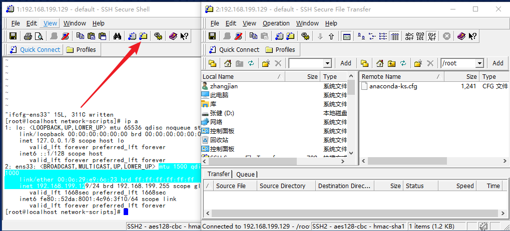
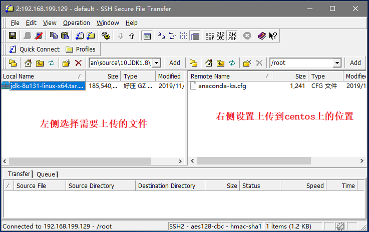
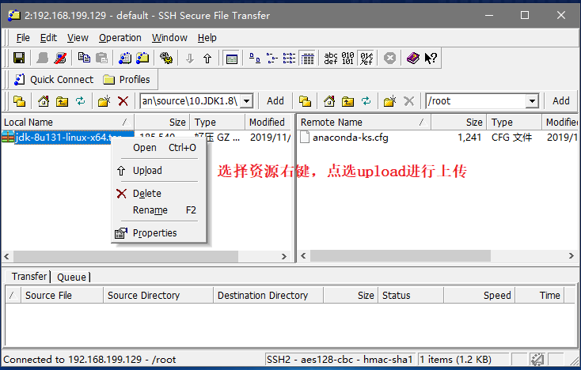
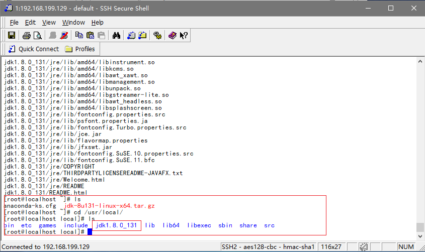
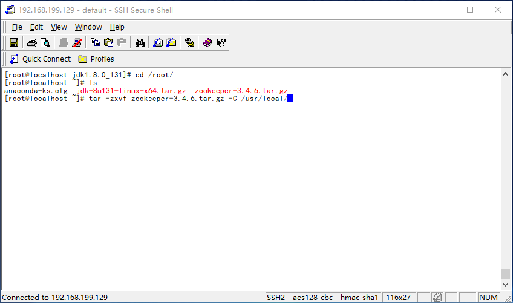
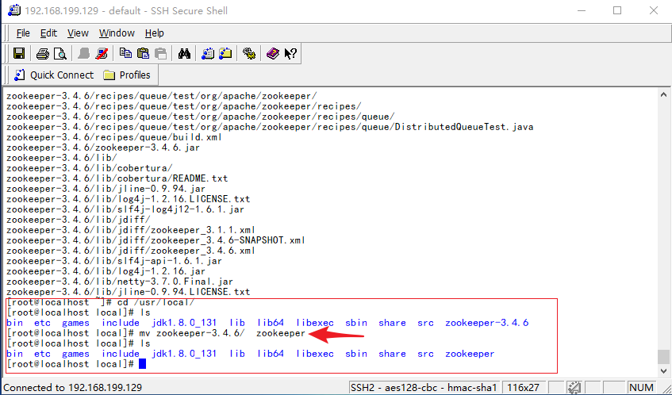
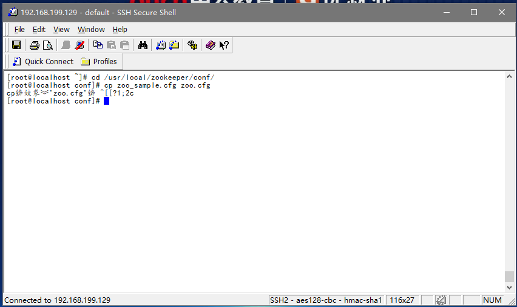
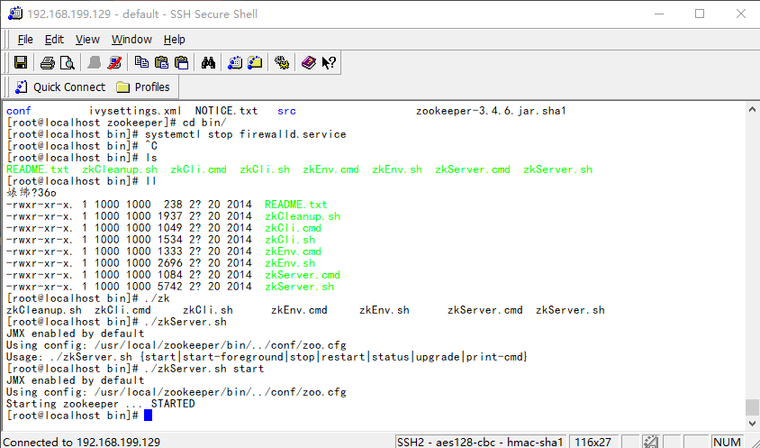
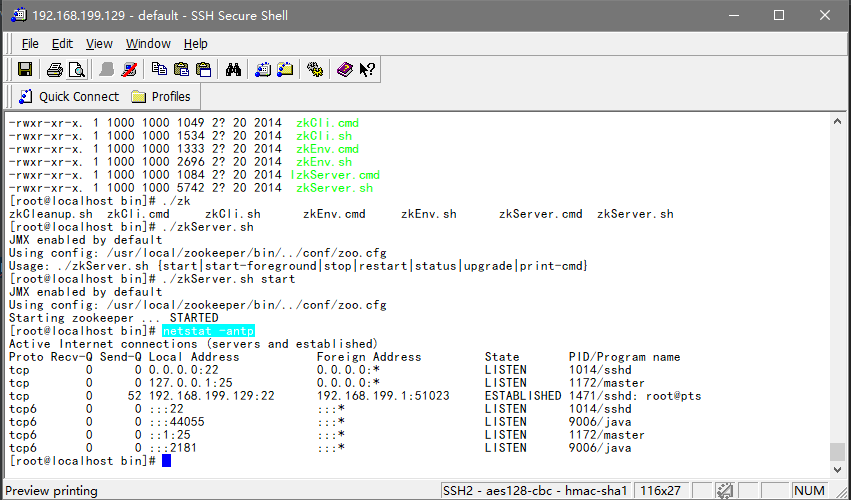

一，JDK环境安装
1.1 启动上传程序

1.2 设置上传资源

1.3 上传资源
注意，上传过程中会有卡顿，不要做多余操作，避免程序崩溃

1.4 解压JDK文件
执行指令tar -zxvf jdk-8u131-linux-x64.tar.gz -C /usr/local/,指令说明：
- tar -zxvf 解压命令
- jdk-8u131-linux-x64.tar.gz 解压的资源
- -C 复制
- /usr/local 复制到的位置
1.5 查看解压资源

1.6 配置环境变量
- 第一步，执行指令
vi /etc/profile - 第二步，追加如下内容
- export JAVA_HOME=/usr/local/java/jdk1.8.0_131
- export CLASSPATH=$:CLASSPATH:$JAVA_HOME/lib/
- export PATH=$PATH:$JAVA_HOME/bin
- 第三步，执行指令
source /etc/profile,将配置文件重新刷新一下
二，Zookeeper安装和配置
第一步，上传zookeeper安装文件
上传过程同JDK文件上传操作
第二步，解压zookeeper文件
执行指令：tar -zxvf zookeeper-3.4.6.tar.gz -C /usr/local/

第三步，修改zookepper文件夹名
由于文件夹名字较长，我们可以将文件夹名字进行重命名，操作如下：

第四步，配置zookeeper配置文件
默认配置文件不生效，需要修改成为指定文件名,操作如下：
执行命令
cd /usr/local/zookeeper/conf/，进入到zookeeper安装位置执行命令
cp zoo_sample.cfg zoo.cfg，将zoo_sample.cfg 文件复制一份，名字叫zoo.cfg- 切记不要使用mv 会将原先文件直接干掉的，不方便后期回滚。

第五步，增加配置信息
- 执行指令
vi /usr/local/zookeeper/conf/zoo.cfg - 修改配置信息
dataDir=/usr/local/zookeeper/data
第六步，启动zookeeper
执行指令
cd /usr/local/zookeeper/bin执行指令
./zkServer.sh start执行成功后，会出现如下页面

第七步，确认启动状态
执行指令netstat -antp

如上图所示，当出现2181端口的时候，说明我们的zookeeper已经启动成功
第八步，防火墙设置
为了能够通过链接工具远程访问该服务器，需要配置防火墙，开放工作端口，指令如下：
firewall-cmd --add-port=2181/tcp --permanent或
firewall-cmd --zone=public --add-port=2181/tcp --permanent
注意：后期工作如果使用三方云服务器，开放端口后依然无法通行，需要在三方云服务器后台的安全策略组配置中开放该端口
本项目中，我们采用破釜沉舟的解决办法，关闭防火墙。
- 关闭防火墙
- systemctl stop firewalld.service
- 禁止防火墙开机自启动
- systemctl disable firewalld.service
- 重启防火墙
- firewall-cmd --reload
第九步，设置开启自启动
- 执行指令
chmod +x /etc/rc.d/rc.local - 执行指令
vi /etc/rc.d/rc.local- vim编辑器打开该文件后追加如下数据
- source /etc/profile
- /usr/local/zookeeper/bin/zkServer.sh start
- vim编辑器打开该文件后追加如下数据